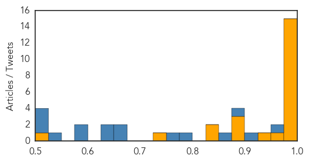
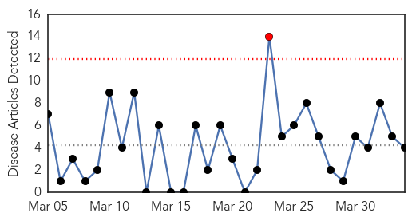
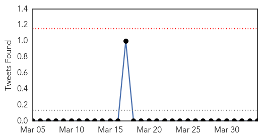
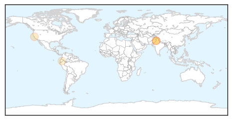

Ebola
30-Day Web Trend
0 alerts, 0 warnings
30-Day Twitter Trend
0 alerts, 0 warnings
Article Locations
Article Confidences
Top Articles:
- 0.999
- Liberia, Sierra Leone Gain in Ebola crisis; Guinea Struggles
- 0.999
- Emerging and re-emerging diseases: Stopping the spread (2)
- 0.999
- Liberia, Sierra Leone gain in Ebola crisis
- 0.999
- Liberia: No vaccinations for months has put children at risk - Liberia
- 0.998
- Colorado hospital patient tested negative for Ebola
- 0.997
- Ebola Diaries Crossing Borders
- 0.993
- These 6 symptoms predict Ebola risk
- 0.993
- Colorado patient tests negative for Ebola at Medical Center of the Rockies, moved to UCHealth
- 0.990
- N.B. nurse heading to West Africa to help Ebola victims
- 0.988
- Guinea finds three Ebola cases in the alumina hub of Fria
- 0.987
- U.S. Faces Superbug Outbreak
- 0.983
- On front line against Ebola
- 0.983
- On front line against Ebola
- 0.980
- Guinea shuts border with Sierra Leone in effort to end Ebola
- 0.975
- Omaha Native Returning To Give CDC Ebola Response Lecture
- 0.964
- Texas Health Resources files response denying Ebola nurse Nina Pham’s claims of negligence and invasion of privacy
- 0.947
- Selfless service
- 0.895
- Sept. 11, swine flu, ebola were challenges for Mount Olive's Wilpert
- 0.888
- News Scan for Apr 03, 2015
- 0.882
- China supporting continent-wide efforts to strengthen disease surveillance, emergency preparedness and response - World
- 0.834
- RI Hospital doctor develops Ebola virus diagnostic tool
- 0.833
- West Point ETU under Renovation for School Building
- 0.728
- Santa Barbara County Grand Jury Ranks Ebola Preparedness Efforts ‘Adequate’
- 0.503
- The Limits of Technology in Fighting Ebola
Top Tweets:
- 0.997
- Doctors develop Ebola virus diagnostic tool - Medical Xpress http://t.co/AQuoIdNIPo ebola EVD
- 0.991
- RI Hospital doctor develops Ebola virus diagnostic tool - WPRI 12 Eyewitness News http://t.co/M37MmcLTLv ebola EVD
- 0.972
- Rhode Island Hospital Physician Develops Ebola Virus Diagnostic Tool - Infection Control Today http://t.co/AHElc1guhx ebola EVD
- 0.968
- Ebola Vaccine Safe, Immunogenic in Phase I Trials - Medscape http://t.co/hfCoaSaIjG ebola EVD
- 0.962
- Severe Ebola Virus Infection Complicated by Gram-Negative Septicemia http://t.co/kq9dj4QosE
- 0.945
- Derivatn + Internal Validatn- Ebola Predictn Score for Risk Stratificatn of Patients W Suspect Ebola http://t.co/FbGgJUebR2
- 0.941
- Though Ebola Cases Are in Decline, Hospitals Continue to Stay Vigilant - TWC News http://t.co/Nj4bc9f9pM ebola EVD
- 0.922
- These 6 symptoms predict Ebola risk - Futurity: Research News http://t.co/jT0Oepb3ZG ebola EVD
- 0.876
- Mutation rate and genotypevariation of Ebola virus from Mali case sequences http://t.co/1d564lkBfb
- 0.866
- RT: Ebola vaccine tests show it could 'neutralise' virus: Geneva hospital http://t.co/QYxrekGA1V
- 0.851
- Guinea's President has declared a 45-day "health emergency" in five regions of the country over the Ebola outbreak. http://t.co/7Q5ywZrKOB
- 0.831
- RT: @UNMEER:Ebola Update: 25,228 confirmed, probable and suspected cases reported in 3 most affected countries, w/10,462 deat…
- 0.809
- Reports shed light on Ebola challenges for hospitals - CIDRAP http://t.co/2tlugIe17D ebola EVD
- 0.797
- Ebola virus diagnostic tool developed by physician who worked in Liberia http://t.co/J9kx0zL4kS
- 0.788
- The Limits of Technology in Fighting Ebola - Nextgov http://t.co/NpSW5fSU9k ebola EVD
- 0.775
- Ebola diaries: Crossing the border, Ebola enters SierraLeone http://t.co/zBz1eXAE8f
- 0.772
- There is urgent need for ppl w/ healthcare & public health experience, French fluency to fight Ebola in Guinea. http://t.co/2000HjvTMi
- 0.749
- Ebolas Newest Casualty: Health Care - Daily Beast http://t.co/qrjU3OzMYZ ebola EVD
- 0.638
- MOOC. Ebola : Vaincre ensemble @coursera freeonlinecourse http://t.co/uIcmNEtQ6E
- 0.592
- Ebola Vaccine Appears Safe, Effective http://t.co/8AtQ3yVKCn
- 0.591
- Ocular Manifestations of Ebola: An Ophthalmologist’s Guide to Prevent Infection and Panic http://t.co/XAKhD0Dwq7
- 0.590
- The head of the UN's Ebola fighting force warns against complacency as the fight against Ebola enters its final lap. http://t.co/eg1QH2G25T
- 0.581
- RT: Think Ebola is old news? Over? There were 1265 cases in March - 3x more than the biggest outbreak ever pre-2014. http:…
- 0.573
- Ebola modeling floats flood response app - http://t.co/472Kj3MJqa http://t.co/GS1iwvghZE ebola EVD
- 0.571
- Liberia, SierraLeone making Ebola progress; Guinea still struggles http://t.co/Bo4lwkfvF3
- 0.569
- RT: Ebola: The Global Pandemic Emergency Facility will equip countries for outbreak preparedness- Pres. Jim Kim http://t.co/Vtl…
- 0.532
- Ebola: most unnatural of disasters http://t.co/SirhTI9gSi
Dengue Fever
30-Day Web Trend
1 alerts, 0 warnings

30-Day Twitter Trend
0 alerts, 0 warnings

Article Locations
Article Confidences

Top Articles:
Top Tweets:
-
No tweets found for Apr 03, 2015